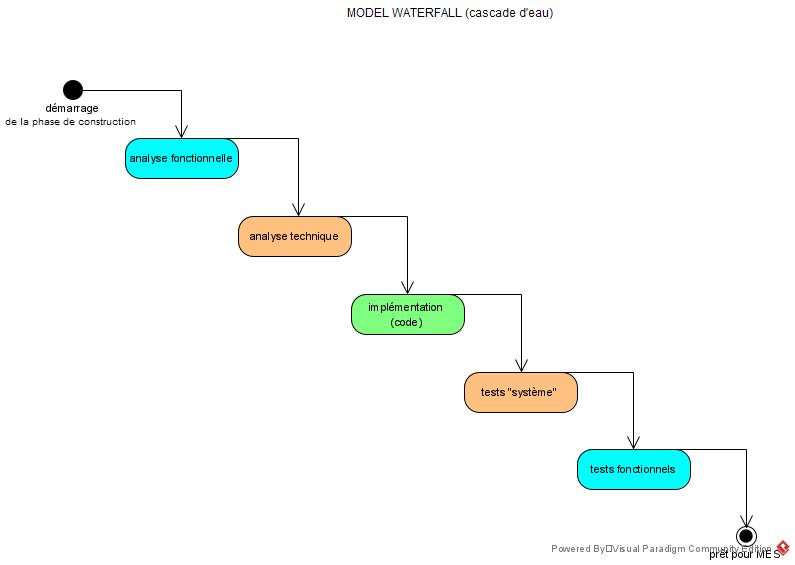
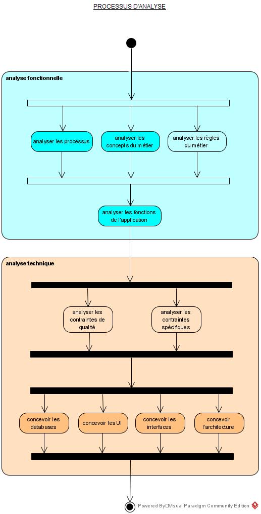

Comprendre la place de l'analyse dans les projets informatiques
Après cette leçon, l'étudiant connaitra
le modèle waterfall pour le développement logiciel
le modèle UP pour le développement logiciel
en quoi consiste l'analyse fonctionnelle
en quoi consiste l'analyse technique
Durée estimée : 3 heures.
Type d'enseignement : ex-cathédra & discussions.
Introduction
L'analyse est une des activités pratiqués
lors de la création de logiciel.
Elle consiste à produire des modèles du logiciel
qui le documenter,
de partager la connaissance
et servir de support pour des discussions sur le logiciel
en vue de l'améliorer ou de mieux l'utiliser.
L'analyse répond aux questions suivantes:
Que doit faire le logiciel? (quelles sont les fonctionnalités du logiciel?)
Comment doit-il le faire? (comment ces fonctionnalités seront-elles implémentées)
L'analyse est donc habituellement divisée en deux parties distinctes:
l'analyse fonctionnelle qui répond à la question "quoi?"
l'analyse technique qui répond à la question "comment?"
Notons que l'analyse technique est aussi appelée "Design".
Application
Pour bien comprendre l'analyse,
il est nécessaire de bien comprendre
quand intervient l'analyse
dans le cycle de vie d'une application.
Bien que l'analyse intervient dans toutes les étapes,
elle a son sommet d'activité au début de l'étape
construction de l'application.
L'effort associé à chaque étape est très différent,
ainsi si la première étape, une idée, nécessite un effort de 1
l'étape suivante, vérifier la faisabilité, nécessitera un effort de 10
la troisième étape, préparer le projet, coutera un effort de 100
et construire l'application demandera un effort 1000.
L'étape mettre en service a un coût très variable mais normalement inférieur à contruire l'application
et la maintenance de l'application coûte en général 20% du coût de projet par an, soit environ 200 par an.
Mettons notre loupe sur cette étape
et utilisons le modèle waterfall pour la décomposer:

Processus de construction de l'application
celon le modèle waterfall.
L'analyse apparaît dans les deux premières étapes
et nous pouvons considérer qu'elle prend environ 1/5 de l'effort
pour construire l'application.
Analyse
Etudions maintenant l'analyse
et modélisons le processus,
certe ce ne sera pas la vérité de tous les projets
mais cela nous permettre de mieux comprendre
et de communiquer.

processus d'analyse
inspiré par la méthode "Unified Process"
Chaque étape consiste à réaliser un modèle de notre application,
suivant un angle de vue différent.
Chaque modèle nécessite des outils différents,
des diagrammes différents ou des descriptions textuelles
ou des notations.
Bien entendu, c'est complexe.
Mais le problème est en soi complexe.
Pensez au nombre de modèles différents
que l'on peut faire d'une maison.
liste des fonctions apportées par la maison (dormir au chaud, faire la cuisine, ...)
plan de structure
plan du cablage
plan du système de chauffage
plan des sanitaires
plan d'aménagement intérieur
Et une maison reste bien plus simple qu'un système informatique.
Outils
Nous outiliserons le logiciel Visual Paradigm
pour réaliser nos diagrammes
car il est d'usage libre pour des activités non commerciales.
Il existe différente méthode pour le développement logiciel
et chacune propose une approche différente de l'analyse.
Nous verrons ici les méthodes UP (Unified Process) et SCRUM.
UP
Le processus unifié a été mis au point par Ivar Jacobson, Graady Booch et James Rumbaugh,
qui sont aussi les penseurs à la base de UML (Unified Modelling Language).
UP est décrit en détail dans le livre "Le Processus unifié de développement logiciel"
et l'objectif ici est de vous inviter à lire le livre
et de le comparer avec la présentation ici.
UP divise le projet en 4 phase (Création (Inception), Elaboration, Construction, Transition)
Comparer à l'approche présenté ici, voir Application Live Cycle,
UP décrit les étapes "préparer le projet" (Création), construire l'application (Elaboration, Construction) et
mettre en service (Transition).
UP décrit les différentes tâches effectuées pendant chaque étape.
Exigence est la description des besoins, c'est l'un des rôle l'analyse l'analyse fonctionnelle,
par exemple un modèle de use cases remplit parfaitement cette tâche.
Analyse : l'analyse fonctionnelle et l'analyse technique
Conception : c'est l'implémentation, la conception de l'application, le codage, ...
Transition : c'est la mise en service
UP décrit avec précision les différentes étapes de l'analyse et
les modèles utilisés:
modèle du domaine (nous étudions le modèle du domaine dans le cours)
modèle des cas d'utilisation pour décrire les besoins (étudié)
modèle d'analyse pour analyser les cas d'utilisation (non vu ici, certes intéressant mais très peu utilisé)
modèle de conception (vu ici, mais décomposé en modèle des classes d'implémentation, modèle des composants et modèle de déploiement
Chaque modèle utilise différents diagrammes et concepts
modèle du domaine: diagrammes de classes, d'objets et d'états;
modèle des cas d'utilisation: cas d'utilisation;
modèle d'analyse: diagrammes de collaboration, diagrammes de séquences, diagramme de classes;
modèle de conception: diagrammes de classes, de composants et de déploiement, de collaboration, de séquences, d'états, d'activités;
SCRUM
SCRUM est une méthode agile.
Comme toutes les méthodes agiles,
elle favorise la communication sur la documentation.
SCRUM ne donne pas beaucoup de directive sur l'analyse,
les seuls concepts liés à l'analyse sont les user stories et le backlog.
En résumé, nous pouvons dire que SCRUM ne fournit implicitement un seul modèle d'analyse,
que nous pourrions nommé "user story model".
Le "user story model" correspond au "use cases model" de la méthode UP.
Certains auteurs, Jef Patton par exemple, propose aussi un processus pour créer les user stories,
appelé story mapping. Nous pourrions donc parler de "story mapping model".
SCRUM n'impose aucun autre modèle.
C'est la responsabilité de l'équipe de décider quels modèles sont utiles
et beaucoup d'équipes se contentent de réaliser des diagrammes
à la demande, c'est-à-dire lorsqu'une question se pose.
Références
Les références du cours sont:
Applying UML and Pattern, édition 3 de Craig Larman.
C'est sans doute le livre de référence pour de l'Unified Process, précis, clair, avec deux exemples complets.
Ce livre est d'une qualité hors norme, seul défaut, 960 pages.
Il existe une traduction française
mais elle est indisponible
et je n'ai pas trouvé de copie circulant sur le net (Eyrolles UML et les Design Patterns 2edition), parfois disponible en occasion.
UML2 Modéliser une Application Web, Eyrolles, est un très bon livre concret.
{kind=link}
{kind=link}
{kind=link}

{kind=link}
{kind=link}